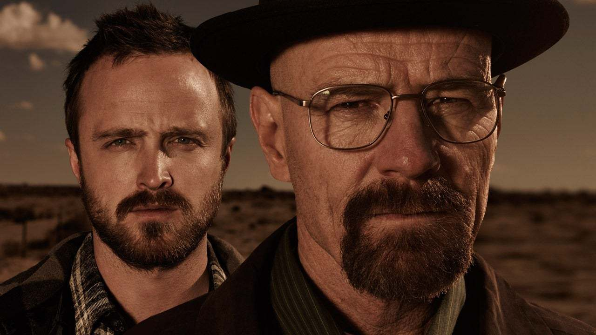
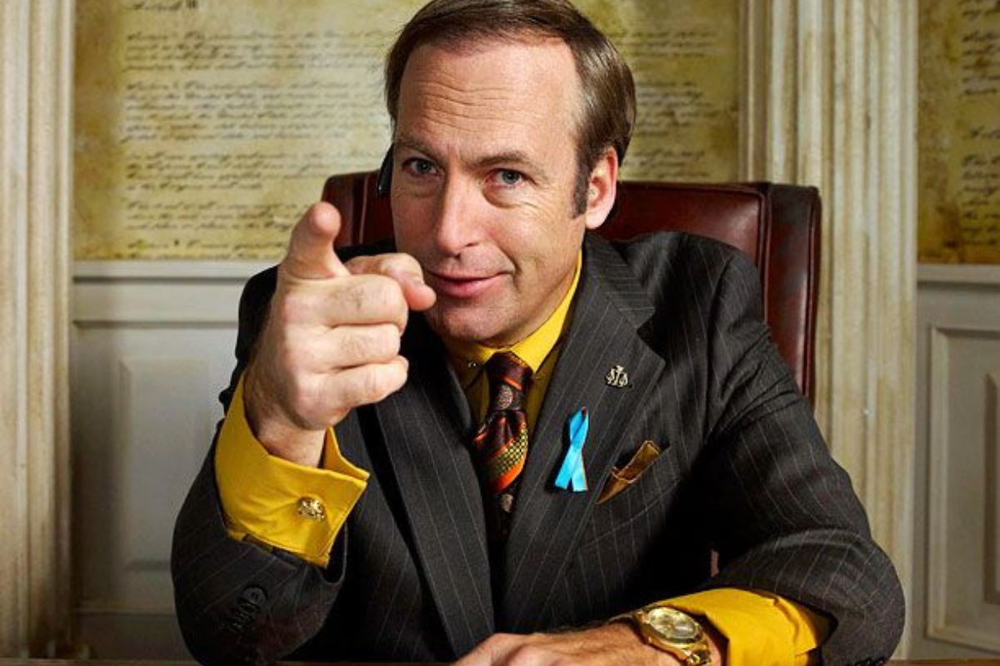
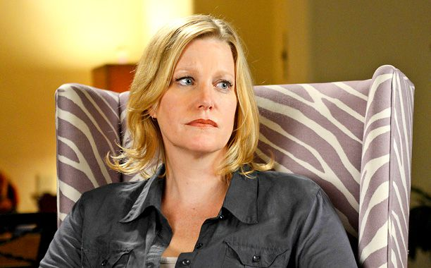
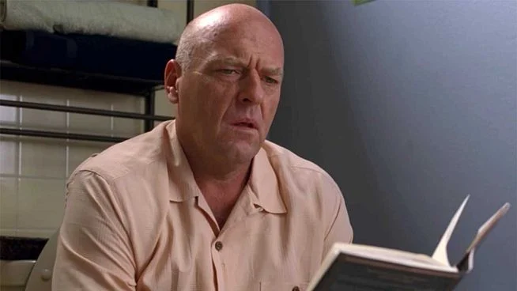

A medida que avanza la serie, Walter se transforma de un hombre común en "Heisenberg", un peligroso capo del narcotráfico, explorando temas como la moralidad, las consecuencias del crimen y cómo el poder corrompe. La serie está llena de giros inesperados, personajes complejos y momentos inolvidables.

Para asegurar el futuro financiero de su familia, Walter decide fabricar y vender metanfetamina con la ayuda de un exalumno, Jesse Pinkman. Gracias a su experiencia en química, Walter produce una metanfetamina de alta pureza, conocida como "cristal azul," que rápidamente domina el mercado. A medida que avanza la serie, Walter se transforma de un hombre común en un despiadado capo del narcotráfico, adoptando el alias "Heisenberg."
Jesse es un personaje lleno de contradicciones: un criminal con conciencia, una víctima del sistema y de sí mismo, pero también alguien que busca redención en un mundo caótico. Su evolución lo convierte en una figura central y emotiva en el universo de la serie. Jesse Pinkman es un personaje principal de Breaking Bad, conocido por su espíritu rebelde, su vulnerabilidad emocional y su evolución a lo largo de la serie. Es el exalumno de Walter White y su socio en la fabricación de metanfetamina. Jesse comienza como un joven impulsivo, despreocupado y con una inclinación por los problemas, debido en parte a su complicado pasado y a la relación distante con su familia.

Saul Goodman, cuyo nombre real es Jimmy McGill, es un personaje clave en Breaking Bad y el protagonista de la precuela Better Call Saul. Es un abogado carismático, i ngenioso y moralmente flexible que se especializa en defender criminales y encontrar soluciones legales poco convencionales. Su lema, "Better Call Saul," refleja su estilo extravagante y llamativo, que lo hace destacar tanto en la sala de juicios como en el bajo mundo del crimen.
Aunque inicialmente comenzó su carrera como Jimmy McGill, un abogado esforzado con ideales, su frustración por la falta de éxito y su inclinación por los atajos lo llevaron a transformarse en Saul Goodman, una figura más pragmática y oportunista. Saul es conocido por su habilidad para manipular el sistema legal y establecer conexiones con el submundo criminal, siendo un aliado clave para Walter White y Jesse Pinkman en sus operaciones.
Detrás de su fachada cómica y extravagante, Saul es un personaje profundamente humano, que lucha con cuestiones de identidad y las consecuencias de sus decisiones. Su evolución, desde un abogado con principios hasta un hombre atrapado por sus propios trucos, lo convierte en uno de los personajes más fascinantes y complejos de este universo.
Es una mujer inteligente, práctica y fuerte, que comienza la serie como una esposa dedicada y madre protectora de sus dos hijos, Walter Jr. y Holly. Trabajó como contadora y más tarde se dedicó a escribir de manera independiente. Skyler es un pilar para su familia, enfocándose en mantener la estabilidad y la seguridad económica, aunque sus preocupaciones aumentan con el tiempo debido al comportamiento extraño y distante de su esposo, Walter.
Walter White Jr., también conocido como Flynn, es el hijo mayor de Walter y Skyler White en la serie Breaking Bad. Es un joven amable, optimista y determinado, que enfrenta su vida con parálisis cerebral. Esta condición afecta su movilidad y habla, y utiliza muletas para desplazarse, pero a pesar de los desafíos físicos, Flynn muestra un espíritu independiente y resiliente.

Hank Schrader es uno de los personajes principales en la serie Breaking Bad. Es un agente especial de la DEA (Drug Enforcement Administration) y el cuñado de Walter White. Hank es un hombre carismático, extrovertido y con un sentido del humor a menudo ligero, que utiliza como mecanismo para afrontar las dificultades de su trabajo. Sin embargo, también demuestra ser profundamente comprometido, valiente y apasionado por la justicia.
Marie Schrader es un personaje de Breaking Bad, hermana menor de Skyler White y esposa de Hank Schrader. Trabaja como técnico en radiología y es conocida por su personalidad extrovertida y directa. Es leal a su familia, aunque enfrenta conflictos emocionales, especialmente cuando las acciones de Walter White afectan su vida. Su amor por el color púrpura y su tendencia a robar pequeños objetos son características distintivas que reflejan su complejidad emocional. A lo largo de la serie, Marie desempeña un papel importante al apoyar a Hank y Skyler durante situaciones difíciles.
La idea de Breaking Bad surgió en la mente de Vince Gilligan alrededor del año 2002, después de que terminara su trabajo en The X-Files. Durante una conversación con un amigo, bromeaban sobre construir un laboratorio de metanfetaminas en una casa rodante para recorrer el país. Esta imagen quedó grabada en la mente de Gilligan y se convirtió en la base para la historia de Walter White y su transformación en "Heisenberg". Aunque tomó varios años para que la serie se desarrollara y encontrara un hogar en AMC, esta idea inicial marcó el inicio de uno de los dramas más icónicos de la televisión.

Los datos que podrían incluirse en las estadísticas de los personajes de Breaking Bad abarcan aspectos importantes como sus nombres y alias, que reflejan sus identidades principales y cómo se transforman a lo largo de la serie, como "Heisenberg" para Walter White o "Flynn" para su hijo, Walter Jr. También se analizaría su relación con Walter White, describiendo cómo sus conexiones familiares, profesionales o conflictivas influyen en la narrativa central.
Otro elemento fundamental es su profesión, que proporciona contexto a sus acciones y evolución, como la transición de Walter de profesor de química a fabricante de metanfetaminas, o la práctica legal poco convencional de Saul Goodman. También es relevante destacar un rasgo distintivo de cada personaje, como la resiliencia emocional de Jesse Pinkman o el amor de Marie Schrader por el color púrpura, para resaltar su individualidad.
La serie Breaking Bad cuenta con una banda sonora impresionante que complementa perfectamente su narrativa intensa y emocional. Incluye canciones de diversos géneros y artistas, además de la música original compuesta por Dave Porter.